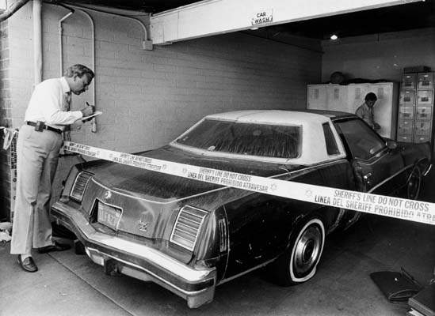
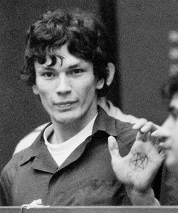

Resolviendo un Caso: El Acosador Nocturno
Para entender el poder de la criminología y la criminalística juntas, analizaremos uno de los casos más famosos de la década de los 80 en Estados Unidos: El caso de Richard Ramirez, apodado por la prensa como el "Acosador Nocturno".
Durante meses, la ciudad de Los Ángeles vivió aterrorizada. Un hombre entraba a las casas por las noches y atacaba a sus víctimas sin un patrón aparente. No robaba grandes sumas de dinero, las víctimas eran de distintas edades y razas, y usaba diferentes tipos de armas. La policía estaba desconcertada.
Es aquí donde entró la criminología. Los perfiladores criminales determinaron que el atacante era alguien impulsivo, probablemente un marginado social con un profundo odio acumulado, desorganizado en su vida personal y que actuaba por la pura emoción del poder y el terror, no por beneficio económico.



A pesar de tener el perfil psicológico, la policía necesitaba pruebas físicas. El delincuente era escurridizo, pero el principio de Locard ("todo contacto deja rastro") nunca falla. En uno de sus últimos ataques, Ramirez cometió un error crucial que sellaría su destino.
Huyendo de una escena, robó un automóvil. El coche fue encontrado abandonado días después. El equipo de criminalística lo analizó meticulosamente, aplicando polvos reactivos en cada superficie. En el espejo retrovisor, encontraron una huella dactilar parcial. ¡Esa era la pieza faltante!
Los expertos en dactiloscopia introdujeron la huella en el recién creado sistema informático de la policía. En cuestión de minutos, la computadora arrojó una coincidencia con el archivo de un joven con antecedentes por robo de autos: Richard Ramirez. Ahora tenían un nombre y un rostro que mostrar en las noticias.
Gracias a la difusión de su fotografía, un grupo de ciudadanos lo reconoció en la calle y lo acorraló hasta que llegó la policía. Fue la perfecta combinación: la criminología predijo su comportamiento y la criminalística proporcionó la prueba científica irrefutable que lo condenó a prisión, resolviendo uno de los casos más grandes de la historia.